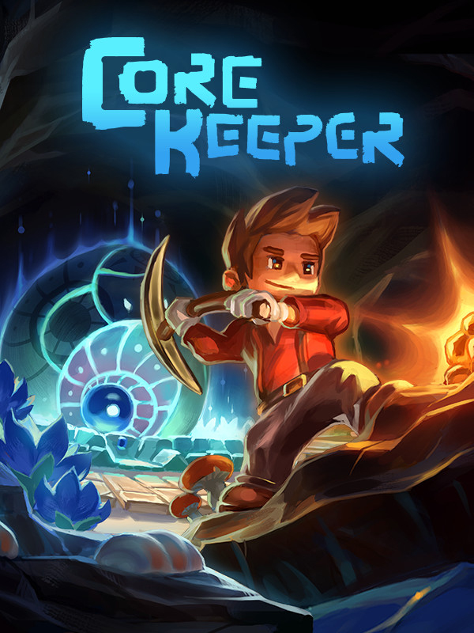

Core Keeper
Core Keeper
Details
|  | |
| Playtime | 1d 12h 0m 0s |
| Last Activity | 2024-03-04 23:54:58 |
| Added | 2024-01-17 0:54:05 |
| Modified | 2024-01-17 0:54:15 |
| Completion Status | Played |
| Library | Steam |
| Source | Steam |
| Platform | PC (Windows) |
| Release Date | 2022-03-08 |
| Community Score | 61 |
| Critic Score | |
| User Score | |
| Genre | Adventure Indie Role-playing (RPG) |
| Developer | Pugstorm |
| Publisher | Fireshine Games |
| Feature | Co-Operative Multiplayer Single Player |
| Links | Twitter Steam YouTube Discord Twitch |
| Tag | |
Description
Drawn towards a mysterious relic, you are an explorer who awakens in an ancient cavern of creatures, resources and trinkets. Trapped deep underground will your survival skills be up to the task?
Mine relics and resources to build your base, craft new equipment, survive, and power up the Core. Defeat giant monsters, discover hidden secrets, farm crops, cook new recipes and explore a procedurally generated underground world in a mining sandbox adventure for 1-8 players.

Explore a vast underground cave of endless resources. Mine ores, discover hidden crystals, fossils & trinkets and survive a procedurally generated underground world.

Delve into living biomes and fight cavernous creatures in a vast subterranean system. Scour the dark world around you and encounter the behemoths of the underground. Defeat them and take the spoils of victory to help uncover the mystery of the Core.

Customise your character and craft new items, armour and equipment to venture further into the caves. Craft a pickaxe to mine walls and resources, build bridges to cross underground lakes, and place torches to light up the profound ever-present darkness.

Tend your crops to grow a variety of plants by planting seeds found during your adventures. Find the perfect fishing spot and catch a plethora of unique fish. Combine the yield of your hard work farming and fishing in the cooking pot to discover delicious recipes with unexpected effects.

Survive alone or play online with up to 7 other players. Work together to mine resources, fight, farm, craft and survive. Specialise in your role to help your fellow explorers tame the unruly landscape you find yourselves in.
Mine relics and resources to build your base, craft new equipment, survive, and power up the Core. Defeat giant monsters, discover hidden secrets, farm crops, cook new recipes and explore a procedurally generated underground world in a mining sandbox adventure for 1-8 players.
Explore a vast underground cave of endless resources. Mine ores, discover hidden crystals, fossils & trinkets and survive a procedurally generated underground world.
Delve into living biomes and fight cavernous creatures in a vast subterranean system. Scour the dark world around you and encounter the behemoths of the underground. Defeat them and take the spoils of victory to help uncover the mystery of the Core.
Customise your character and craft new items, armour and equipment to venture further into the caves. Craft a pickaxe to mine walls and resources, build bridges to cross underground lakes, and place torches to light up the profound ever-present darkness.
Tend your crops to grow a variety of plants by planting seeds found during your adventures. Find the perfect fishing spot and catch a plethora of unique fish. Combine the yield of your hard work farming and fishing in the cooking pot to discover delicious recipes with unexpected effects.
Survive alone or play online with up to 7 other players. Work together to mine resources, fight, farm, craft and survive. Specialise in your role to help your fellow explorers tame the unruly landscape you find yourselves in.